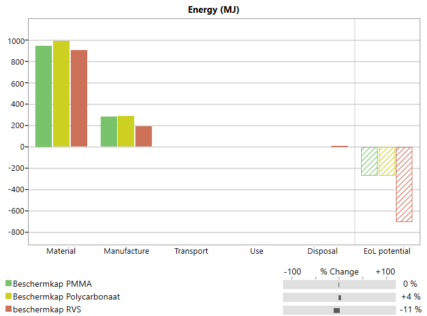
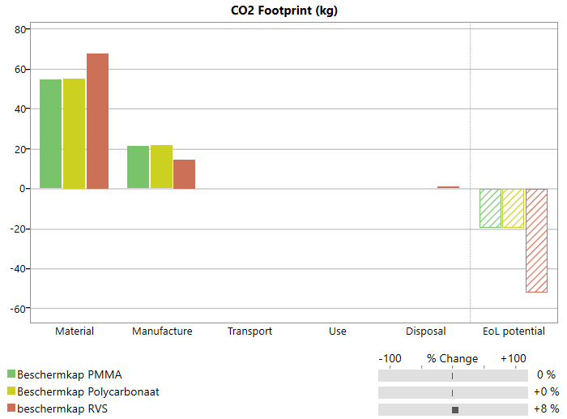
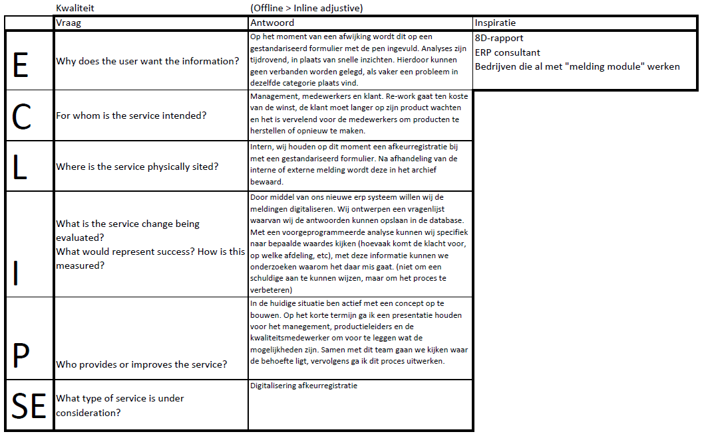
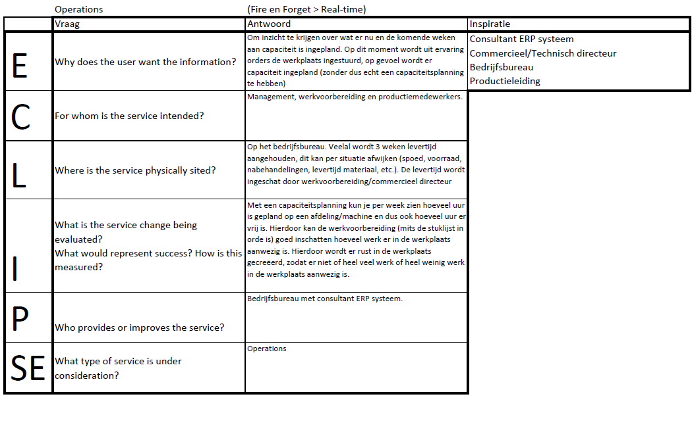
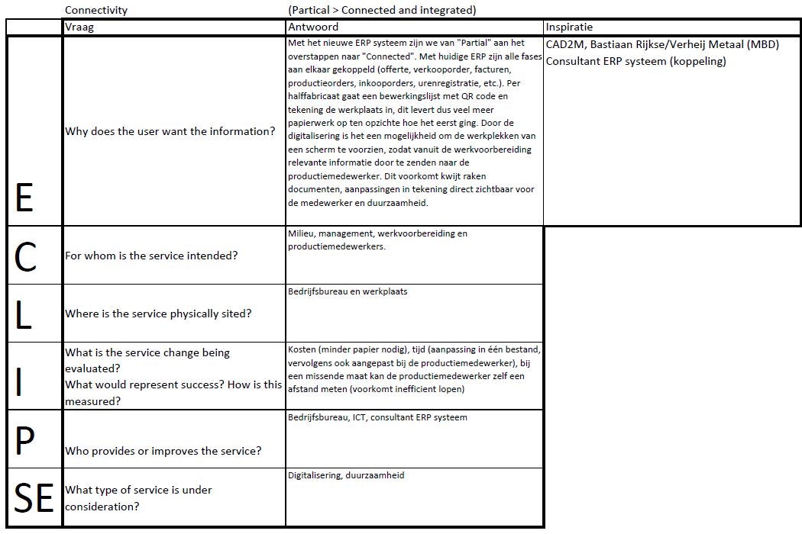

Inleiding
Welkom op mijn portfolio, in het portfolio worden alle opdrachten getoont die wij hebben uitgevoerd voor de module Smart Industry
1. Sustainable Factory
2. Smart Start: Smart Factory
3. Smart Start: Research / Basis ICT
4. Advanced Manufacturing
1. Sustainable Factory
Voor sustainble factory hebben wij vier opdrachten uitgevoerd.
- Een reflectie schrijven over de documentaire Vuil Goud
- Een reflectie schrijven over de de game In the Loop
- Een reflectie schrijven over een paragraaf uit de reader
- Een LCA over een product uit eigen bedrijf
Reflectie "Vuil Goud"
Op de dag van vandaag is (bijna) alles om je heen met elkaar verbonden, overal zitten minicomputers
in en dagelijks gooien wij massaal apparaten weg zonder er te veel bij na te denken welke gevolgen
dit voor onze wereld heeft. Nu diverse metalen en andere grondstoffen beginnen op te raken
moeten we gaan roeien met de riemen die wij hebben. We gaan manieren bedenken hoe wij onze
metalen kunnen gaan winnen. Naast dat Urban mining en Landfill mining financieel erg aantrekkelijk
is, is het ook nog eens een stuk beter voor de natuur.
Daarnaast vond ik het heel triest om te zien dat onze “troep” in 3e wereldlanden gedumpt wordt, dat
deze mensen uit financieel oogpunt hier hun centen mee moeten verdienen met alle gevolgen van
dien. Het initiatief dat door Joost Kluiver is opgezet geeft een beter toekomstbeeld voor deze
mensen, maar ik vraag mij af hoelang deze giftige stoffen in de bodem blijven zitten.
Reflectie "paragraaf 3, 7769 Materials environment and sustainability"
Voor deze opdracht heb ik een reflectie geschreven over paragraaf 3, de samenvatting is hierboven te vinden.
Collectief natuur kapitaal zijn hulp bronnen uit de natuur. Het woord kapitaal is
een passende term. Kapitaal betekent namelijk "bezit dat gebruikt wordt om een inkomen te verwerven".
Als er gekeken wordt naar bijvoorbeeld de grondstoffen die worden gebruikt voor mobiele telefoons,
worden puur uit economisch oogpunt gebruikt (om een inkomen te verwerven).
Veel van deze grondstoffen worden of zijn zelfs al schaars, waardoor er alternatieven bedacht moeten worden.
In de documentaire "vuil goud" wordt er geen alternatief bedacht voor materiaalkeuze, maar
wordt een alternatief bedacht om deze grondstoffen te winnen.
In paragraaf 3 van de reader "7769 Materials environment and sustainability" wordt
er gebruik gemaakt van de LCA (levenscyclus analyse). Het verbruik van grondstoffen,
emissies en de gevolgen worden beoordeeld a.h.v. een LCA.
Echter is dit meer een productbeoordeling dan een ontwerphulpmiddel. Hiervoor is de "life assessment methode"
ontwikkelt. Alle kosten worden gecombineerd om de besluitvorming tijdens het ontwerpproces
te sturen.
Het is belangrijk om te gaan kijken naar milieu vriendelijker alternatieven.
Op de huidige manier wordt massaal onze bronnen uitgeput, zoals in de documentaire
worden E-waste hergebruikt. Afval dat wij de afgelopen 20-30 jaar hebben weggegooid,
terwijl deze nog vol met herbruikbare grondstoffen zitten.
Zoals in de reader staat beschreven zijn bepaalde hoeveelheden materialen herbruikbaar,
op voorwaarde dat deze goed beheerd worden. Naast een goed beheer is de
materiaalkeuze een belangrijke stap in het ontwerpproces, zodat we voor de tijd
al aandacht hebben geschonken aan het milieu.
Reflectie "In the Loop
Tijdens de les sustainable factory hebben wij de game "In the Loop" gespeeld
met de studenten smart industry. Per speler neem je de rol in als productiebedrijf,
daarbij is het de bedoeling dat je als eerste tot zeven "voortgangspunten" te komen.
Dit kun je bereiken door grondstoffen te verzamelen en daar producten mee bouwen.
Tijdens het spel krijg je te maken met "events", dit zijn wereldgebeurtenissen wat effect
heeft op het verkrijgen van materialen of verkopen van producten.
Tijdens de game kregen we te maken met een event, waardoor alle grondstoffen
vanuit China niet meer ingekocht konden worden. Dat gaf een grote impact op de productie,
veel producten kwamen stil te liggen waardoor de speler zijn product niet meer kon verkopen.
Materialen raakte op of kwamen op de reserves aan, wat er gebeurde is dat iedereen hoge prijzen
boden op deze materialen, ook al waren ze op dat moment niet nodig.
Dit zie je nu ook in de realiteit, vanwege het Coronavirus zijn veel materialen
moeilijk verkrijgbaar en slaan mensen/bedrijven massaal goederen in.
Als werkvoorbereider is dit een bekende situatie, materialen kunnen verlaat binnen komen,
minder orders die binnen komen en zieke medewerkers. Dit zijn allemaal gevolgen die ook
een impact hebben op de productie.
De link met smart industry zit hem in het beheren van een database,
hiermee kun je informatie opslaan van materialen en zijn eigenschappen.
Mocht er een materiaal niet meer verkrijgbaar zijn, zou je in de database een vervanger
kunnen zoeken met vergelijkbare eigenschappen en prijs.
Dit maakt materialen ook critical (risico op levering, gevolgen voor milieu, financieel kostbaar,
economisch belangrijk) vanwege hun unieke eigenschappen of economische redenen.
Een onderneming wilt in elke tijd een goede winst behalen, maar in bepaalde tijden
is dit natuurlijk soms iets minder dan in andere tijden.
Een voorbeeld is de huidige Coronacrisus, waarbij het belangrijk is voor bedrijven om het
hoofd boven water te houden. Daarom is het belangrijk dat het bedrijf een buffer heeft om
op terug te kunnen vallen, mocht het bedrijf in zwaar weer terect komen.
De verantwoording van een bedrijf ligt bij de vijf prestatie indicatoren,
zoals snelheid, flexibiliteit, kwaliteit, leverbetrouwbaarheid en kosten.
Het bedrijf heeft de verantwoordelijkheid om in beeld te hebben waar de klant waarde aan hecht,
misschien gaan kwaliteit en leverbetrouwbaarheid wel boven de kosten. Hierdoor moet er in mijn ogen
vooral aandacht geschonken worden aan quality control en prestaties van machine en mens, maar minder aandacht
aan de materiaalprijzen. Bij ons in het bedrijf hechten we aan alle indicatoren waarde,
maar wij proberen ons te onderscheiden door kwaliteit en flexibiliteit te leveren aan de klant.
Zowel de lange als de korte termijn zijn belangrijk. Je wilt iets bereiken voor op het lange termijn (stabiele en groeiende onderneming)
hierdoor zul je bepaalde keuzes moeten maken voor het korte termijn. Klanten moeten op jou kunnen rekenen,
dit heb je niet na één goede levering verzegeld. Het is dus op korte termijn belangrijk een goed lopende operationele onderneming
te krijgen.
Eco audit materiaal eigen bedrijf


Rapport RVS uitvoering
Rapport polycarbonaat uitvoering
Rapport PMMA uitvoering
Voor deze opdracht heb ik een Eco audit gemaakt met edu pack voor een beschermkap die wij maken voor een klant
uit de voedingsmiddelen industrie. Deze klant heeft diverse lijnen in de fabriek waarmee zij bijvoorbeeld
voeding verpakken, wegen (controle punt) en verpakken in dozen. Onlangs hebben wij een project daar gehad,
waarbij wij de huidige lijnen van beschermkappen moeten voorzien. Zoals hierboven is aangegeven komt de verpakking
met voeding aan bij een weegpunt, wijkt deze af van de standaard wordt deze uit de lijn gegooid.
Het afwijkende product valt in een krat onder het controle punt. Op dit moment kunnen de medewerkers
bij deze krat, terwijl de machine draait (waardoor het gevaar ontstaat dat je bij draaiende delen in de buurt komt).
De klant gaf aan een rvs frame te willen met een transparante plaat ervoor, dit past bij de huidige layout van de rest van de machine.
Op dit moment wordt de keuze Polycarbonaat gekozen boven PMMA, omdat dit materiaal minder snel breekt dan PMMA en beter bewerkbaar is.
De klant vind het belangrijk dat de plaat transparant is, om te kunnen zien of er afwijkende producten in de krat liggen.
Een nadeel van de huige kappen is dat deze kappen regelmatig los worden gehaald door het onderhoudsteam, na 1 á 2 jaar ontstaan er barsten
bij de bevestigingspunten, tot hij een keer helemaal breekt.
Zelf gaat mijn voorkeur uit naar een geperforeerde RVS plaat met een koker 10x10x1. De huidige kappen worden gemaakt met
een koker frame 20x20x2 met een 5mm PC plaat. Omdat deze kappen vaak maar een aantal jaar mee gaan doordat het onderhoudsteam
deze vaak weer te vast monteren en de bevestigingsgaten breken, zou mijn voorkeur uit gaan naar een minder robuuste rvs frame met geperforeerde
plaat. De bevestigingsgaten zullen bij de geperforeerde plaat niet breken, waardoor de levensduur van dit product veel langer wordt.
In de eco audit zie je wat dit doet.
2. SMART START: Smart Factory
Voor smart start (Smart Factory) hebben wij de volgende opdracht uitgevoerd:
- Smart scan uitvoeren voor het eigen bedrijf
- Scan bespreken met werkplekcoach
Smart scan
overleg met werkplek coach tekst
3. SMART START: Research/ICT
Tijdens de lessen Reseach/ICT hebben we aandacht geschonken
aan de basis van ict (web programming), digitalisering en networking.
Daarbij hebben we leren zoeken naar relevantie informatie op het web
Eclipse (onderzoeksvraag) n.a.v. de smart scan



5. Advanced Manufacturing
Tijdens de lessen advanced Manufacturing hebben we aandacht
aan (deep) machine learning. De lessen waren met name ingericht om te laten zien
wat de huidige ontwikkelingen zijn binnen deze categorie.
Tijdens de laatste les zijn we met de medestudenten bezig geweest met een stukje machine learning.
Hierbij konden we met een programma op de raspbery Pi een hond en een kat laten herkennen.

Opdracht: Onderzoek hoe machine learning een plek binnen je eigen bedrijf zou kunnen krijgen